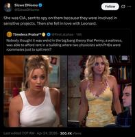

An anonymous reader quotes a report from Wired: The Department of Justice announced Thursday that it arrested Gannon Ken Van Dyke, an enlisted member of the US Army's special forces, for allegedly using "classified, nonpublic" information about the capture of Venezuelan president Nicolas Maduro to notch more than $400,000 in profits on Polymarket trades. A grand jury indicted him on five counts, including multiple violations of the Commodity Exchange Act. Van Dyke is the first person to be charged with insider trading on a prediction market in the United States. Lawmakers have been voicing concerns for months about the high likelihood that politicians and public servants could use nonpublic information to profit from trades on leading industry platforms like Polymarket and Kalshi, which have exploded in popularity over the past year. The arrest comes just weeks after Department of Justice prosecutors met with Polymarket about potential insider tradition violations. [...] After Van Dyke's arrest was made public, Polymarket posted a statement to social media noting that it had "identified a user trading on classified government information" and "referred the matter to the DOJ & cooperated with their investigation." The company declined to comment further.
According to court documents, Van Dyke has been an active duty US soldier since September 2008 and rose to the level of master sergeant in 2023. At the time of the alleged trading activity, he was stationed at Fort Bragg in Fayetteville, North Carolina and assigned to the Army's Special Operations Command Western Hemisphere Operations. [...] The complaint alleges that Van Dyke was involved in the planning and execution of Maduro's arrest and that he was aware that he wasn't authorized to share nonpublic information about US military operations. The complaint says that Van Dyke signed a nondisclosure agreement that forbade him from revealing sensitive or classified government information "by writing, word, conduct, or otherwise." The complaint also alleges Van Dyke saved a screenshot to his Google account "displaying the results of an artificial intelligence query" outlining how the US Special Forces maintains many classified files including "operational details that are not available to the public." [...] Van Dyke faces a maximum sentence of 60 years if convicted on all counts.
Read more of this story at Slashdot.
The FCC has expanded its foreign-made router ban to also cover consumer Wi-Fi hotspots and LTE/5G home-internet devices, though existing products and phones with hotspot features are not affected. PCMag reports: On Wednesday, the FCC updated its FAQ on the ban, clarifying which consumer-grade routers are subject to the restrictions. Portable Wi-Fi hotspots are usually considered a separate category from Wi-Fi home routers. Both offer internet access, but portable Wi-Fi hotspots use a SIM card to connect to a cellular network rather than an Ethernet cable inside a residence. However, the FCC's FAQ now specifies that "consumer-grade portable or mobile MiFi Wi-Fi or hotspot devices for residential use" are covered under the ban.
The ban also affects "LTE/5G CPE devices for residential use," which are installed for fixed wireless access and use a carrier's cellular network to deliver home internet. The FCC didn't immediately respond to a request for comment about the changes. In the meantime, the FAQ reiterates that the foreign-made router ban only applies to consumer-grade devices, not enterprise products. The document also notes that mobile phones with hotspot features remain outside the restrictions. In addition, the ban only affects new router models that vendors plan to sell, not existing models, as T-Mobile emphasized to PCMag.
Read more of this story at Slashdot.
An anonymous reader quotes a report from Wired: New gas projects linked to just 11 data center campuses around the US have the potential to create more greenhouse gases than the country of Morocco emitted in 2024. Emissions estimates from air permit documents examined by WIRED show that these natural gas projects -- which are being built to power data centers to serve some of the US's most powerful AI companies, including OpenAI, Meta, Microsoft, and xAI -- have the potential to emit more than 129 million tons of greenhouse gases per year. As tech companies race to secure massive power deals to build out hundreds of data centers across the country, these projects represent just the tip of the iceberg when it comes to the potential climate cost of the AI boom.
The infrastructure on this list of large natural gas projects reviewed by WIRED is being developed to largely bypass the grid and provide power solely for data centers, a trend known as behind-the-meter power. As data center developers face long waits for connections to traditional utilities, and amid mounting public resistance to the possibility of higher energy bills, making their own power is becoming an increasingly popular option. These projects have either been announced or are under construction, with companies already submitting air permit application materials with state agencies. [...] The emissions projections for the xAI and Microsoft projects, and all the others on WIRED's list, were pulled directly from publicly-available air permit documents in state databases as well as public air permit materials collected by both Cleanview and Oil and Gas Watch, a database maintained by the Environmental Integrity Project, an environmental enforcement nonprofit. Actual greenhouse gas emissions from power plants are usually lower than what's on their air permits. Air permit modeling is based on the scenario of a power plant constantly running at full capacity. That's rarely the reality for grid-connected power plants, as turbines go offline for maintenance or adjust to the ebbs and flows of customer demand.
"Permitted emission numbers represent a theoretical, conservative scenario, not the actual projected emissions," Alex Schott, the director of communications at Williams Companies, an oil and gas company that is building out three behind-the-meter power plants in Ohio for Meta, told WIRED in an email. Internal modeling done by the company, Schott added, shows that actual emissions could be "potentially two-thirds less than what's on paper." The projections involved, however, are still substantial. Even if the actual emissions from these power plants end up being half of the emissions numbers on the permits, they still could create more greenhouse gas emissions than the country of Norway emitted in 2024. This number is, according to the EPA, equivalent to the emissions from more than 153 average-sized natural gas plants. (WIRED's analysis does not include emissions from backup generators and turbines on the data center campuses themselves, which create smaller amounts of emissions.)
Energy researcher Jon Koomey says the data center boom has created a shortage of the most efficient gas turbines, pushing some developers toward less efficient models that would need to run longer and produce more emissions. "[Data center operators'] belief is that the value being delivered by the servers is much, much more than the cost of running these inefficient power plants all the time," he said.
Michael Thomas, the founder of clean energy research firm Cleanview, has been tracking gas permits for data centers across the country. He calls behind-the-meter power "a crazy acceleration of emissions." He added: "It's almost like we thought we were on the downside of the Industrial Revolution, retiring coal and gas, and now we have a new hump where we're going to rise. That terrifies me in a lot of ways."
Read more of this story at Slashdot.
Warner Bros. Discovery shareholders have approved Paramount Skydance's takeover bid, moving the massive Hollywood merger a step closer to completion. It's not a done deal quite yet, though, as it still faces regulatory scrutiny and fierce opposition from critics who warn it will further concentrate media power. The Associated Press reports: Per a preliminary vote count Thursday, Warner Bros. Discovery said the overwhelming majority of its stakeholders voted in support of selling the entire business to Skydance-owned Paramount for $31 a share. Including debt, the deal is valued at nearly $111 billion based on Warner's current outstanding shares. That means Warner-owned HBO Max, cult-favorite titles like "Harry Potter" and even CNN could soon find themselves under the same roof with Paramount's CBS, "Top Gun" and the Paramount+ streaming service.
David Zaslav, CEO of Warner Bros. Discovery, said in a statement that stockholder approval marks "another key milestone toward completing this historic transaction." Paramount added that it looks forward to closing in the coming months, and "realizing the creation of a next-generation media and entertainment company." [...] Meanwhile, Warner shareholders rejected a separate measure Thursday outlining post-merger payments for company executives.
Read more of this story at Slashdot.
Meta is reportedly cutting about 10% of its workforce, or roughly 8,000 jobs, while closing thousands of open roles it had intended to fill. "We're doing this as part of our continued effort to run the company more efficiently and to allow us to offset the other investments we're making," said Janelle Gale, Meta's chief people officer. The company had almost 79,000 employees at the start of the year. Quartz reports: Meta CEO Mark Zuckerberg has poured resources into building out AI capabilities, directing spending toward model development, chatbot products, and the engineering talent to support them. Meta set its 2026 capital expenditure guidance at $115 billion to $135 billion, almost double the $72 billion it spent in 2025. Employees have been encouraged to use AI agents internally for tasks such as writing code.
The early disclosure, Gale explained, was prompted by the fact that information about the cuts had already made its way into press reports before the company was ready to announce. "I know this is unwelcome news and confirming this puts everyone in an uneasy state, but we feel this is the best path forward, given the circumstances," she wrote.
According to the memo, severance for affected workers in the United States will cover 18 months of COBRA health insurance premiums, along with a base pay component of 16 weeks that increases by two weeks for each year of service. Departing employees will have access to job placement assistance and, where applicable, help navigating immigration status. Packages outside the U.S. will vary by country. Meta cut between 10% and 15% of its Reality Labs workforce in January, shut down several VR game studios, and shed about 700 positions across at least five divisions in March.
Read more of this story at Slashdot.
An anonymous reader quotes a report from TechCrunch: The French government agency that handles the issuing and management of citizens' identity documents, including national IDs, passports, and immigration documents, confirmed Wednesday that it experienced a data breach. In an announcement, the Agence Nationale des Titres Securises (ANTS) said the data stolen in the breach could include full names, dates and places of birth, mailing and email addresses, and phone numbers on an undisclosed number of citizens. ANTS said the investigation to determine how the breach happened and its impact is ongoing, and people whose data was affected are being notified.
ANTS, which said it detected the attack on April 15, did not specify how many people were affected by the breach. But some reporting suggests millions may have had some of their personal information stolen. According to Bleeping Computer, a hacker has advertised the stolen data on a hacking forum, claiming to have a database with 19 million records. The hacker's forum post referenced the same kind of stolen information as mentioned in ANTS' announcement and was published before ANTS publicly disclosed the breach on April 20.
Read more of this story at Slashdot.
Microsoft plans to offer voluntary buyouts for the first time. According to CNBC, "about 7% of U.S. employees are eligible," with the program being "available to U.S. workers at the senior director level and below whose years of employment and age add up to 70 or higher." Further details will be provided on May 7. From the report: Last year Microsoft removed some costs through multiple rounds of layoffs. As of June 2025, the company had 228,000 employees. "Our hope is that this program gives those eligible the choice to take that next step on their own terms, with generous company support," Amy Coleman, Microsoft's executive vice president and chief people officer, wrote in a memo viewed by CNBC.
Additionally, Microsoft is adjusting the way it doles out stock to employees for annual rewards. The company will no longer make managers tie stock directly to cash bonuses. This way, "managers have more flexibility to meaningfully recognize high performance," Coleman wrote. The company is also simplifying the review process for managers, so they can choose from five pay options for employees instead of nine.
Read more of this story at Slashdot.
An anonymous reader quotes a report from the Associated Press: New York is suing Coinbase and Gemini, two of the newest players in the prediction market industry, arguing that the companies' unregulated and unlicensed platforms are illegal gambling operations. Attorney General Letitia James' lawsuit, filed Tuesday in state court in Manhattan, seeks to bar the companies' platforms from operating in the state unless and until they obtain licenses from the state Gaming Commission.
"Gambling by another name is still gambling, and it is not exempt from regulation under our state laws and Constitution," James said in a statement. "Gemini and Coinbase's so-called prediction markets are just illegal gambling operations, exposing young people to addictive platforms that lack the necessary guardrails." Both companies began as cryptocurrency trading platforms before branching into the prediction space, which has been dominated by Kalshi and Polymarket.
[...] New York's lawsuit alleges that the Coinbase and Gemini are seeking "to avoid the legal and financial consequences" of the state's close regulation of gambling "by offering what is quintessentially wagering under the guise of offering 'event contracts' on a 'prediction market.'" By operating without licenses, the lawsuit says, Coinbase's and Gemini's prediction market businesses aren't paying the same taxes as licensed casinos and mobile sportsbooks, which are taxed by the state at a rate of approximately 51% of gross revenues. In addition, the lawsuit says, Coinbase and Gemini allow users as young as 18, while state law prohibits wagering by anyone under 21.
Read more of this story at Slashdot.
Norway plans to ban social media access for children under 16 (source paywalled; alternative source), "joining a growing number of countries responding to concerns about the potential harm kids face online," reports Bloomberg. From the report: The bill comes after "overwhelming" demand from the public, the government said Friday. It plans to bring the legislation to parliament before the end of the year. The limit will apply up until January 1 the year a child turns 16 with technology companies responsible for age verification, the government said. "We want a childhood where children get to be children," Prime Minister Jonas Gahr Store said in the statement. "Play, friendships, and everyday life must not be taken over by algorithms and screens." "Children cannot be left with the responsibility for staying away from platforms they are not allowed to use," Karianne Tung, Norway's minister of digitalization, said in the statement. "That responsibility rests with the companies providing these services."
Recent Slashdot coverage of countries instituting or proposing social media bans has included Australia, France, Austria, Indonesia, and Denmark.
Read more of this story at Slashdot.
Anthropic is expanding Claude's app integrations beyond work tools, adding personal-service connectors like Spotify, Uber, AllTrails, TripAdvisor, Instacart, and TurboTax. The Verge reports: Some of these apps, such as Spotify, already have similar connectors in OpenAI's ChatGPT. Once an app is connected, Claude will suggest relevant connected apps directly in your conversations, like using AllTrails for hike recommendations. Anthropic notes in its blog post announcing the new connectors that, "Your data from [connected apps] isn't used to train our models, and the app doesn't see your other conversations with Claude. You can also disconnect it at any time."
Additionally, Anthropic says "there are no paid placements or sponsored answers in conversations with Claude." When multiple apps seem relevant, Claude will show results from both "ranked by what's most useful." Claude will also ask users to verify before taking actions like making a purchase or reservation using a connected app.
Read more of this story at Slashdot.
Apple has fixed a bug that could cause parts of Signal notifications to remain stored on iPhones even after messages disappeared and the app was deleted. "Affected users concerned about push notifications can update their devices to stop what Apple characterized as 'notifications marked for deletion' that 'could be unexpectedly retained on the device,'" reports Ars Technica. "According to Apple, the push notifications should never have been stored, but a 'logging issue' failed to redact data." From the report: Vulnerable users hoping to evade law enforcement surveillance often use encrypted apps like Signal to communicate sensitive information. That's why users felt blindsided when 404 Media reported that Apple was unexpectedly storing push notifications displaying parts of encrypted messages for up to a month. This occurred even after the message was set to disappear and the app itself was deleted from the device.
404 Media flagged the issue after speaking to multiple people who attended a hearing where the FBI testified that it "was able to forensically extract copies of incoming Signal messages from a defendant's iPhone, even after the app was deleted, because copies of the content were saved in the device's push notification database." The shocking revelation came in a case that 404 Media noted was "the first time authorities charged people for alleged 'Antifa' activities after President Trump designated the umbrella term a terrorist organization." "We're grateful to Apple for the quick action here, and for understanding and acting on the stakes of this kind of issue," Signal's post said. "It takes an ecosystem to preserve the fundamental human right to private communication."
In their post, Signal confirmed that after users update their devices, "no action is needed for this fix to protect Signal users on iOS. Once you install the patch, all inadvertently-preserved notifications will be deleted and no forthcoming notifications will be preserved for deleted applications."
Read more of this story at Slashdot.
OpenAI released its new GPT-5.5 model today, which the company calls its "smartest and most intuitive to use model yet, and the next step toward a new way of getting work done on a computer." The Verge reports: OpenAI just released GPT-5.4 last month, but says that the new GPT-5.5 "excels" at tasks like writing and debugging code, doing research online, making spreadsheets and documents, and doing that work across different tools. "Instead of carefully managing every step, you can give GPT-5.5 a messy, multi-part task and trust it to plan, use tools, check its work, navigate through ambiguity, and keep going," according to OpenAI. The company also notes that GPT-5.5 will have its "strongest set of safeguards to date" and can use "significantly fewer" tokens to complete tasks in Codex. GPT-5.5 is rolling out on Thursday for Plus, Pro, Business, and Enterprise ChatGPT tiers and Codex, with GPT-5.5 Pro coming to Pro, Business, and Enterprise users.
Read more of this story at Slashdot.
In a recent town hall meeting reported by Bloomberg (paywalled), Apple CEO Tim Cook named the troubled 2012 launch of Apple Maps as his "first really big mistake" in the role. "The product wasn't ready, and we thought it was because we were testing more of local kind of stuff," Cook told staff. MacRumors reports: Reflecting on the debacle, Cook said it was "valuable," noting that he expressed regret to users at the time and suggested they use competing navigation apps instead.
"We apologized for it, and we said, 'Go use these other apps. They're better than ours.' And that was some humble pie," Cook said. "But it was the right thing for our users. And so it's an example of keeping the user at the center of the decisions that we made." Cook added: "Now we've got the best map app on the planet. We learned about persistence, and we did exactly the right thing having made the mistake."
Read more of this story at Slashdot.
An anonymous reader quotes a report from Reuters: Tesla CEO Elon Musk said on Wednesday the EV maker plans to use Intel's next-generation 14A manufacturing process to make chips at its Terafab project, an advanced AI chip complex Musk has envisioned in Austin. The contract would mark Intel's first major customer for the technology, a breakthrough for the chipmaker which has struggled to stand up its contract manufacturing business essential for taking on top rival TSMC. Intel CEO Lip Bu Tan has said that the company would exit the chip manufacturing business altogether if it failed to secure an external customer.
Intel has previously said it was in discussions with large customers about 14A, but has not yet disclosed a major external customer. It declined to comment on Musk's remarks. [...] "Given that by the time Terafab scales up, 14A will be probably fairly mature or ready for prime time," Musk said. "14A seems like the right move, and we have a great relationship with Intel," he said. Ben Bajarin, head of technology consultancy Creative Strategies, said that Intel's 14A technology could "turn out to be a bigger deal for Intel than folks thought." "It's important to have multiple partners as early design partners to help clean the pipe and work through needed learnings at the leading edge. They will definitely have scale, so a great first non-Intel customer," Bajarin said.
Seaport Research Partners analyst Jay Goldberg said Musk's vote of confidence in Intel's technology outweighed the unknowns about the Terafab project. "Having a customer is more important than the timing," he said. Goldberg said that Musk's lofty estimates of how many chips its robots could one day require may or may not materialize, but even making chips for Tesla's existing businesses would be a significant win for Intel. "It's not equivalent to Apple or Nvidia" in terms of chip volumes, Goldberg said. "But it's a real customer. It can be real volumes."
Read more of this story at Slashdot.
A Michigan township has voted to impose a one-year moratorium on providing water to hyperscale data centers, a move aimed at delaying a planned facility that would support Los Alamos National Laboratory's nuclear weapons research. The moratorium may not be enough to stop the project, however: "the University and LANL plan to break ground on the data center on Monday," reports 404 Media. From the report: The proposed data center in the Ypsilanti Township's Hydro Park has been a sore spot for the community since its proposal. The $1.2 billion 220,000 square foot facility would be used by Los Alamos National Laboratories (LANL) some 1,500 miles away for nuclear weapons research. In February, UofM's Steven Ceccio told the University of Michigan Record that the facility would consume 500,000 gallons of water per day and that the University planned to buy it from the Ypsilanti Community Utilities Authority. (YCUA)
The YCUA has spent the past month lobbying for a moratorium on providing water and sewer access to hyperscale data centers and "artificial intelligence computing facilities," according to notes on a presentation stored on the organization's website. The moratorium would include LANL's data center. The YCUA cited an American Water Works Association white paper about data center water demands and concluded it needed more time to investigate the matter. "Hyper-scale data centers, as well as other mid-sized data centers, artificial intelligence computing facilities, and high-performance computational centers are 'high-impact customers' for water and sewer utilities," YCUA said in its presentation.
The moratorium places a 12-month stop on serving water to data centers while the YCUA conducts a long-term water supply analysis and looks into the environmental sustainability studies. "During the 12-month moratorium period, the Authority will refrain from executing any capacity reservation agreement." This is a delay tactic on the part of a Township that does not want to see the data center constructed. Many in the community have strong feelings about the use of parkland for a facility that researchers nuclear weapons. Beyond the moral and ethical concerns, some are worried about becoming targets in a war. Last month, Township attorney Douglas Winters told the Board of Trustees that building hosting the data center would make Ypsilanti Township a "high value target." He pointed to the recent bombing of Gulf Coast data centers by Iran as evidence.
Read more of this story at Slashdot.
Madlin Mekelburg / Bloomberg : The DOJ joins xAI in its legal challenge to a new Colorado law that seeks to prevent discrimination by AI tools in employment and other areas — The Trump administration is joining Elon Musk's artificial intelligence company xAI in its legal challenge to Colorado's new state law that seeks …
Bloomberg : Anthropic says Google is committing to invest $10B now in cash at a $350B valuation and will invest another $30B if Anthropic hits performance targets — Google will invest $10 billion in Anthropic PBC, with another $30 billion potentially to follow, strengthening the relationship between …
Joe Wertz / Bloomberg : France's forecasting office refers suspected weather sensor tampering at Paris airport to police, after detecting unusual readings alongside Polymarket betting — France's forecasting office flagged suspected tampering with weather sensors at the country's largest airport and referred the case to police …
Gopika Gopakumar / Reuters : India's central bank cancels Paytm Payments Bank's banking license, after imposing business curbs over non-compliance with rules in January 2024 — India's central bank said on Friday it has cancelled the banking licence issued to Paytm Payments Bank Limited, more than two years …
Mimi Billing / Sifted : Helsinki-based Verda, formerly Datacrunch, which aims to become Europe's first AI cloud hyperscaler, raised €100M in debt and equity — The Finnish cloud provider, formerly known as Datacrunch, says its success comes from being vertically integrated — Helsinki-headquartered Verda …
Matt Day / Bloomberg : Meta and Amazon reach a multibillion-dollar, multiyear deal for Meta to rent hundreds of thousands of Amazon's Graviton chips for its AI inference needs — Amazon.com Inc. and Meta Platforms Inc. have struck a multibillion-dollar deal for the social-media giant to rent hundreds of thousands …
Ina Fried / Axios : Meta inks deal to use more Amazon chips — Meta on Friday announced a deal to use Amazon-designed chips to help deliver its next generation of AI models. … - The new pact, which builds on an existing partnership between AWS and Meta, will make Meta one of the largest users of Graviton chips, the companies said.
Daniel Ren / South China Morning Post : Huawei plans to spend up to ~$11.7B over five years to boost compute for training and testing autonomous cars, with ~$2.64B for autonomous driving R&D in 2026 — Company claims it will outspend all rivals combined to boost computing power, which is essential to enhance advanced driving systems
Bloomberg : Sources: in recent weeks, China told tech companies, like ByteDance and Moonshot AI, to reject US capital without state approval, after Meta's Manus acquisition — Chinese regulators plan to restrict technology firms including some of the country's highest-profile AI pioneers …
Evelyn Cheng / CNBC : Alibaba says its Qwen AI model will be integrated into select car models from BYD, Volkswagen, and others, letting users buy food and tickets via voice commands — BEIJING — Chinese tech giant Alibaba said Friday that its Qwen artificial intelligence model will be integrated into vehicles …
Kai Nicol-Schwarz / CNBC : As part of the Cohere-Aleph Alpha deal, Aleph Alpha backer Schwarz Group plans to invest $600M in Cohere's Series E, which a source says is set to close in 2026 — Canadian AI lab Cohere announced on Friday that it planned to acquire German AI company Aleph Alpha, as it eyed major expansion in Europe.
Terje Solsvik / Reuters : Norway plans to ban children from using social media until they turn 16; the government says it will introduce a bill in parliament by the end of 2026 — Norway said on Friday it would present a bill in parliament by year-end to ban children from using social media until they turn 16 …
Financial Times : Canada-based Cohere and Germany-based Aleph Alpha agree to a merger valuing the combination at ~$20B, to work on sovereign AI; both governments support the deal — Canadian and German start-ups to focus on ‘sovereign’ AI systems independent of US and China
Emma Dunkley / Financial Times : EY survey of 18,000 people across 23 countries: ~49% of consumers have used AI over the past six months to support their savings and investment decisions — Gen Z and millennials the most likely groups to consult chatbots on money matters — Nearly half of global consumers are turning …
Ananya Bhattacharya / Rest of World : Tracxn: global edtech funding fell from $16.7B in 2021 to $2.6B in 2025, while the number of startups launched dropped from 7,178 in 2021 to just 645 in 2025 — Venture capital is moving away from K-12 edtech worldwide as investors prioritize AI tools and workforce training with clearer returns.
0